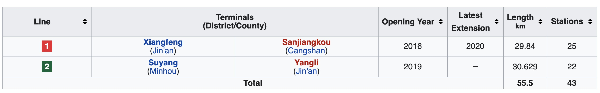

Fuzhou
About Fuzhou

Fuzhou lies on the north (left) bank of the estuary of Fujian's largest river, the Min River. All along its northern border lies Ningde, and Ningde's Gutian County lies upriver. Its population was 7,115,370 inhabitants as of the 2010 census, of whom 4,408,076 inhabitants are urban representing around 61.95%, while rural population is at 2,707,294 representing around 38.05%. As of 31 December 2018, the total population was estimated at 7,740,000 whom 4,665,000 lived in the built-up (or metro) area made of 5 urban districts plus Minhou County. In 2015, Fuzhou was ranked as the 10th fastest growing metropolitan area in the world by Brookings Institution. Fuzhou is listed as No. 20 in China Integrated City Index 2016's total ranking, a study conducted by National Development and Reform Commission.
Cuisine

Fuzhou dishes are representative of the Min (which is short for Fujian Province) Cuisine that is very much a feature of Fujian Province and is one of the Eight Major Cuisines of China . One of the most renowned Fuzhou dishes is Fotiaoqiang (Buddha Jumps Over the wall). With more than 100 year's history, it is a traditional Min Cuisine recipe. It is said to have been created by the wife of a Fuzhou official, who in 1876 was entertaining an important member of the Fujian Government in his home. His wife, who was an excellent cook placed chicken, duck, pork and seafood together into an empty wine jar to simmer following a recipe which was known at the time as 'Full of Blessing and Longevity'. When the dish was served, the visitor praised the aroma and the delicious flavor and was so impressed that when he returned home he asked the cook – Zheng Chunfa to learn how the wife of his host had prepared the food. Subsequently, Zheng Chunfa adapted the recipe making it yet more fulsome and on the strength of his creation opened a restaurant named Juchunyuan where he served it to the delight of his customers. One day several talented writers to the restaurant and were served with Zheng Chunfa's special version of 'Full of Blessing and Longevity'. When he opened the jar in which it had been cooked, the diners were so taken with the gorgeous smell that one of them wrote a poem about it. In it he said that the smell was so wonderful that even a Buddha would stop pattering and jump over the wall to have a taste. Hence the name 'Buddha Jumps over the Wall'. Simmered in a Shaoxing wine jar using more than twenty ingredients including fish, sea cucumber, chicken, pork and mutton, dried scallop, sea-ear, needle of bamboo shoot and pigeon egg, this traditional dish is widely renowned overseas and is considered the top dish among those of the Min Cuisine.
Economy
Industry is supplied with power by a grid running from the Gutian hydroelectric scheme in the mountains to the northwest. The city is a center for commercial banking, designer brands and timber-working, engineering, papermaking, printing, and textile industries. A small iron and steel plant was built in 1958. In 1984 Fuzhou was designated one of China's "open" cities in the new open-door policy inviting foreign investments. Handicrafts remain important in the rural areas, and the city is famous for its lacquer and wood products.
Its GDP was ¥75,614 (c. US$12,140) per capita in 2015, ranked no. 52 among 659 Chinese cities.
Fuzhou is undoubtedly the province's political, economic and cultural center as well as an industrial center and seaport on the Min River. In 2008, Fuzhou's GDP amounted to ¥228.4 billion, an increase of 13 percent.
Manufactured products include chemicals, silk and cotton textiles, iron and steel, and processed food. Among Fuzhou's exports are fine lacquerware and handcrafted fans and umbrellas. The city's trade is mainly with Chinese coastal ports. Its exports of timber, food products, and paper move through the harbor at Guantou located about 50 kilometres (31 mi) downstream.
In 2008, exports reached US$13.6 billion, a growth of 10.4 percent while imports amounted to US$6.8 billion. Total retail sales for the same period came to ¥113.4 billion and per capita GDP grew to ¥33,615. During the same period, Fuzhou approved 155 foreign-invested projects. Contracted foreign investment amounted to US$1.489 billion, while utilized foreign investment increased by 43 percent to US$1.002 billion.
Geography
The city of Fuzhou has direct jurisdiction over 6 districts, 1 county-level city, and 6 counties:

Neighborhoods
The administrative divisions of Fuzhou have been changed frequently throughout history. From 1983, the Fuzhou current administrative divisions were formed officially, namely, 5 districts and 8 counties. In 1990 and 1994, Fuqing (Foochow Romanized: Hók-chiăng) and Changle (Foochow Romanized: Diòng-lŏ̤h) counties were promoted to county-level cities; Changle became a district in 2017. Despite these changes, the administrative image of "5 districts and 8 counties" is still held popularly among local residents. Fuzhou's entire area only covers 9.65 percent of Fujian Province.
Transportation
Fuzhou metro now has Line 1 and Line 2 in service. Line 1 runs between Xiangfeng and South Railway Station. Line 2 links Suyang and Yangli. According to the long-term plan, Line 3, Line 4, Line 5, Line 6 and Line 7 will form the basic urban rail network. Lines 5 and 7 will travel across the Minjiang River, and line 4 will run across the Wujiang River. See metro maps for reference.
It is very convenient for tourists to go around the downtown area by bus. The ticket price is CNY1; tourists should ensure they have small change prior to boarding, the price increases to CNY2 from May 15th to Oct 15th if the bus is operating its air conditioning.
Around 5,000 taxis serve in the city. It is the best choice for people who have a tight schedule. If you go to the city for the first time, do ask the driver to charge by the meter in case of being overcharged. The flag-down rate is CNY10 for the first 3 kilometers (around 1.9 miles) and it costs CNY2 for each additional kilometer (0.6 mile). Between 23:00 and 05:00 the next day, the price of each extra kilometer rises 20%, i.e. CNY2.4. If a taxi runs farther than 8 kilometers (around 5miles), extra 50% is charged for empty return.
History

Notable Events
Fuzhou was occupied by People's Liberation Army with little resistance on 17 August 1949.
In the 1950s, the city was on the front line of the conflict with KMT in Taiwan, as hostile KMT aircraft frequently bombed the city. The bombing on 20 January 1955 was the most serious one, killing hundreds of people.
Fuzhou was also involved in violent mass chaos during the Cultural revolution. Different groups of Red Guards fought with each other using guns on the streets of the city, and even attacking the People's Liberation Army.
Under the reform and opening policy since the late 1970s, Fuzhou has developed rapidly. In 1982, Fuzhou became the first city in China where the stored program control was introduced, which marked a milestone in the history of telecommunications in China. In 1984, Fuzhou was chosen as one of the first branches of Open Coastal Cities by the Central Government.
On December 13, 1993, a raging fire swept through a textile factory in Fuzhou and claimed the lives of 60 workers.
On October 2, 2005, floodwaters from Typhoon Longwang swept away a military school, killing at least 80 paramilitary officers.
Major Attractions
Sanfang Qixiang

Sanfang Qixiang is the only remaining old quarter of Fuzhou. Preserving over 200 ancient folk houses mainly from the Ming and Qing dynasties, it is reputed as the “Architecture Museum of the Ming and Qing Dynasties”. Since its construction in the Jin Dynasty, a great many of scholars have lived here. Therefore, Sanfang Qixiang is also known as the origin of history and culture of Fuzhou. Sanfang Qixiang consists of three lanes, seven alleys and an axis street named Nanhou Street. The three lanes including Yijin Lane, Wenru Lane and Guanglu Lane are to the west of Nanhou Street. The seven alleys are located to the east of Nanhou Street, which are Yangqiao Alley, Langguan Alley, Ta Alley, Huang Alley, Anmin Alley, Gong Alley and Jibi Alley.
Drum Hill
With a main peak of 925 meters above sea level and a total area of 48 square kilometers, Drum Hill or Mount Gu is the most famous beauty spot in Fuzhou City. Listed into the national scenic spots in China, Drum Hill features numerous historical sites and attractive natural beauties. Apart from the central site of Yongquan Temple, there are over 20 scenes in the east part of the hill, dozens of spots in the west, over 50 in the south and 45 in the north. Most of the scenic spots are rocks in diverse postures which are the results of long-tem denudation, weathering, collapse and accumulation in the historical development. Besides, many inscriptions on precipices left in past dynasties are also the highlights in the hill.
Fujian Museum
Fujian Museum (Chinese: 福建博物院) is the provincial museum of Fujian province in China established in 1933. It is located in the city capital of Fuzhou at No. 96, Hutou Jie next to the West Lake Park.
The museum was completed in October 2002, covering an area of 6 hectares and a building area of 36,000 square meters. The total investment of the museum's complex is 270 million Yuan.
As a national first-class museum, the Fujian Museum has a collection of more than 170,000 relics and natural specimens.